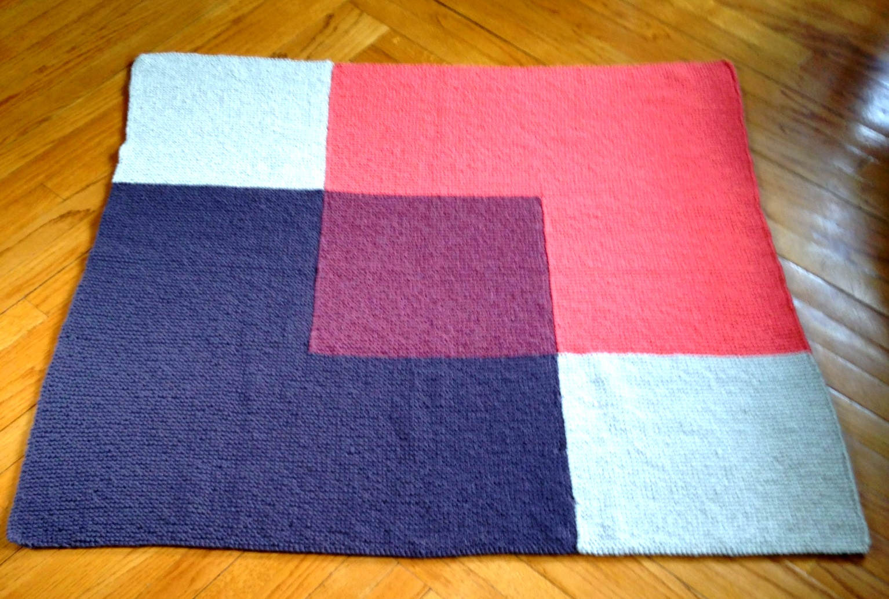
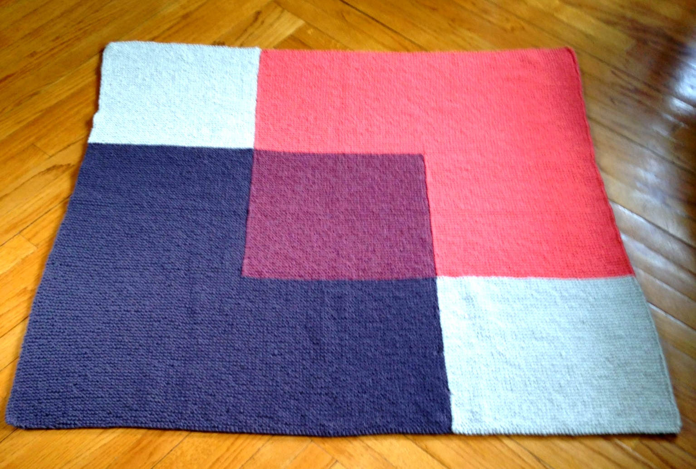

Lindsey Roeder
Brooklyn, NY · (860) 573-7670 ·
lindsey.roeder@gmail.com
I am a data scientist who is motivated by the need for consistent growth and am always looking for a new challenge. My background in analytics, combined with my passion for using data to solve problems, allows me to quickly apply logic to uncover any possible areas for improvement. I want to bring these skills to organizations with cultures that value corporate social responsibility.


 
